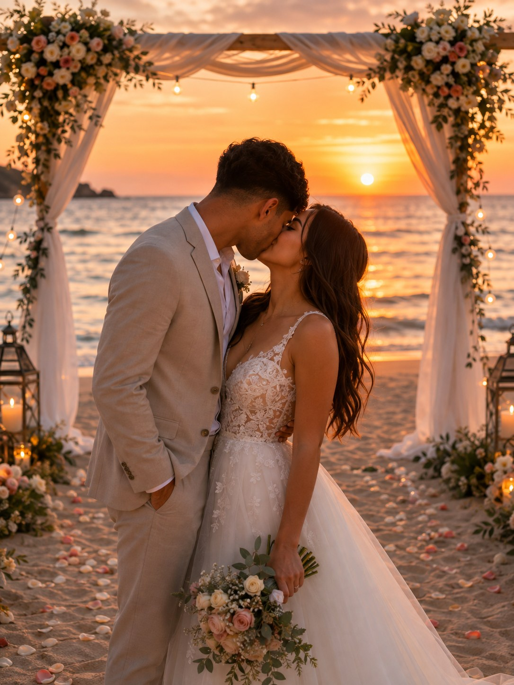

Álbum oficial · edición limitada
Hay algo que llevo tiempo queriendo decirte, que creo que también lo estabas deseando, pero había que esperar el momento perfecto…
Por eso he decidido hacer este álbum de cromos.
Último sobre
Solo queda un cromo por conseguir…
Colección casi completa
(el cromo más buscado de todos, sin cambio posible)

el último cromo que nos falta... algún día
Te quiero. Espero que te haya gustado la sorpresa :)